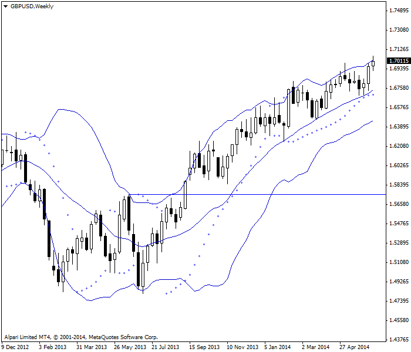
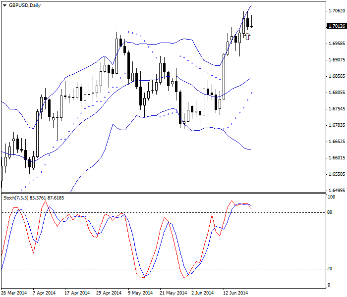
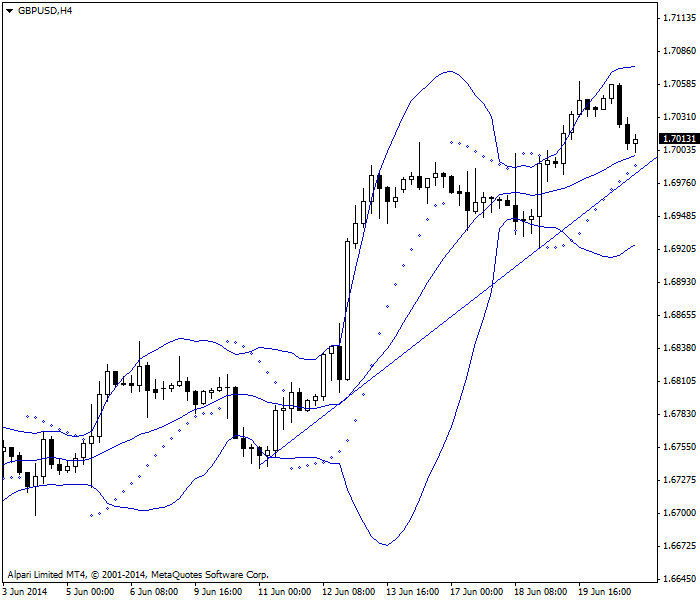
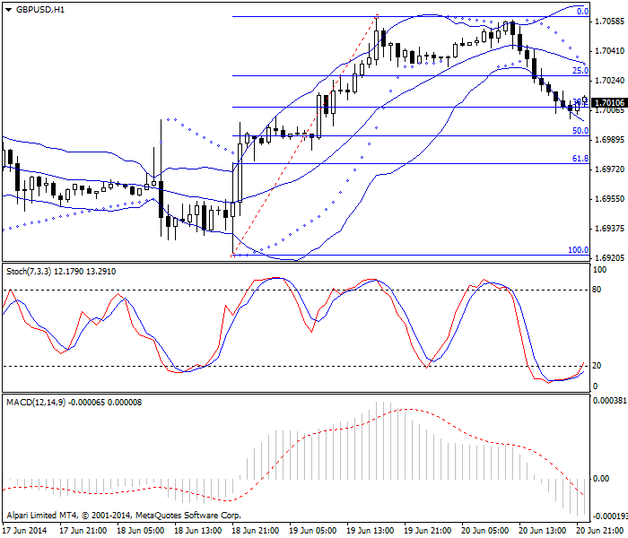

<!DOCTYPE html>
<html>
</html>
<head>
  <meta charset="utf-8">
  <meta http-equiv="X-UA-Compatible" content="IE=edge">
  <title>外汇站（fx-z.com） - 中期交易</title>
  <meta name="description" content="">
  <meta name="viewport" content="width=device-width, initial-scale=1">
  <meta name="robots" content="all,follow">
  <!-- Bootstrap CSS-->
  <link rel="stylesheet" href="vendor/bootstrap/css/bootstrap.min.css">
  <!-- Font Awesome CSS-->
  <link rel="stylesheet" href="vendor/font-awesome/css/font-awesome.min.css">
  <!-- Google fonts - Roboto-->
  <link rel="stylesheet" href="https://fonts.googleapis.com/css?family=Roboto:400,300,700,400italic">
  <!-- owl carousel-->
  <link rel="stylesheet" href="vendor/owl.carousel/assets/owl.carousel.css">
  <link rel="stylesheet" href="vendor/owl.carousel/assets/owl.theme.default.css">
  <!-- theme stylesheet-->
  <link rel="stylesheet" href="css/style.default.css" id="theme-stylesheet">
  <!-- Custom stylesheet - for your changes-->
  <link rel="stylesheet" href="css/custom.css">
  <!-- Favicon-->
  <link rel="shortcut icon" href="img/favicon.png">
  <!-- Tweaks for older IEs--><!--[if lt IE 9]>
    <script src="https://oss.maxcdn.com/html5shiv/3.7.3/html5shiv.min.js"></script>
    <script src="https://oss.maxcdn.com/respond/1.4.2/respond.min.js"></script><![endif]-->
</head>
<body>
  <div id="all">
    <div class="container-fluid">
      <div class="row row-offcanvas row-offcanvas-left"> 
        <!--   *** SIDEBAR ***-->
        <div id="sidebar" class="col-md-4 col-lg-3 sidebar-offcanvas">
          <div class="sidebar-content">
            <h1 class="sidebar-heading"> <a href="https://fx-z.com">fx-z.com</a></h1>
            <p class="sidebar-p">介绍外汇相关的基本知识，告诉您如何进行自己的技术面和基本面分析，讲解先进的交易理念，并且为您阐述失败交易者与专业交易者之间的真正区别。 </p>
            <p class="sidebar-p">通过这些课程的学习，您将学会如何根据自己的优势来应用情绪分析，还将了解真实世界的事件会对货币汇率产生什么影响，央行在外汇市场中所发挥的作用，以及交易者在颇受欢迎的即期外汇交易中有哪些选择方案。 </p>
            <ul class="sidebar-menu">
                <!-- Link-->
                <li class="sidebar-item"><a href="https://fx-z.com" class="sidebar-link">首页</a></li>
                <!-- Link-->
                <li class="sidebar-item"><a href="cihui.html" class="sidebar-link">外汇词汇</a></li>
                <!-- Link-->
                <li class="sidebar-item"><a href="ebook.html" class="sidebar-link">获取外汇电子书</a></li>
            </ul>
            <p class="social"><a href="https://www.forextimechina.com.cn/zh?form=IZIN" target="_blank"data-animate-hover="pulse" class="external facebook"><i class="fa fa-eur"></i></a><a href="https://www.forextimechina.com.cn/zh?form=IZIN" target="_blank" data-animate-hover="pulse" class="external gplus"><i class="fa fa-gbp"></i></a><a href="https://www.forextimechina.com.cn/zh?form=IZIN" target="_blank" data-animate-hover="pulse" class="external twitter"><i class="fa fa-rmb"></i></a><a href="https://www.forextimechina.com.cn/zh?form=IZIN" target="_blank" title="" class="external instagram"><i class="fa fa-dollar"></i></a><a href="https://www.forextimechina.com.cn/zh?form=IZIN" target="_blank" data-animate-hover="pulse" class="email"><i class="fa fa-money"></i></a></p>
            <div class="copyright text-center text-md-left">
             
              
            </div>
          </div>
        </div>
        <!--   *** SIDEBAR END ***  -->
        <!--   *** DETAIL ***-->
        <div class="col-md-8 col-lg-9 content-column white-background">
          <div class="small-navbar d-flex d-md-none">
            <button type="button" data-toggle="offcanvas" class="btn btn-outline-primary"> <i class="fa fa-align-left mr-2"></i>菜单</button>
            <h1 class="small-navbar-heading"> <a href="https://fx-z.com/10-4.html">下一篇 </a></h1>
          </div>
          <div class="row">
            <div class="col-xl-10">
              <div class="content-column-content">
                <h1>中期交易</h1>
    <p>
    外汇中期交易的标准定义将从入场到离场的持有时间限制为一至五天。在外汇中，如果交易者在同一天入场和离场，而且他的意图是击中特定止损/目标位，而不是将交易限制在一段时间内（例如四小时），那么他可以被视为中期交易者。将一天持有期称为“中期”似乎有些可笑，但对于股票等其他资产而言，这并不奇怪。股票的中期约为数周或数月。由于许多外汇交易者专注于仅持续数小时的交易，我们以不同的方式看待外汇中的“中期”。
</p>
<p>
    中期交易与短期交易类似，但交易幅度不同。它限制了您的交易风险，因为离场时是零风险的。而且与短期交易相同，中期交易能让您体验远离屏幕的轻松感。您不必被束缚在电脑桌前，也无需进行任何交易，除非图表为您呈现可行的交易条件。
</p>
<p>
    虽然真正的短期交易侧重棒形图、蜡烛图等即时反映市场情绪的图表形态，但中期交易采用技术分析工具中任意一种或全部技术，包括支撑位与阻力位、数学指标（RSI、MACD、随机指标等）和形态等。许多指标要求数小时以上的成型时间，包括支撑线与阻力线以及一些形态（例如头肩形态）。您可以在 5 分钟图表上绘制一条支撑线，但它的可靠性低于每小时或每日图表上的支撑线可靠性。如果您在 5 分钟图表上见到头肩形态，则可能真的出现了这种形态，或者只是一种随机情况。
</p>
<p>
    中期交易的一项有用特点是——关于更长的时间周期可以在同一周期内入场、离场多次的观念。此时，多个时间周期的咨询图表以及机制良好的止损与获利了结规则能够派上用场。例如，请查阅以下 GBP/USD 货币对周线图。我们见到双重底出现持续上行走势，而且当价格越过 W 形的中央高点时，这一论断已得到证实。价格已持续上涨数周，是较为成熟的趋势。
</p>
<p>
     双重底在 GBP/USD 每周图表上产生的强劲涨势。
</p>
<p>
    我们知道，价格从不按直线运动，而且当价格开始回落时，我们试图让“趋势减弱”。请查看以下相同货币对的每日图。该图表显示倒数第二条日线图为内包日线（最高价与最低价位于前一日的最高价、最低价范围内），说明市场出现不确定性，而且多头势力可能减弱。重要的一点在于，新高点显然尚未出现，而且此时为纽约周五的中午。当天的新闻已经公布，因此出现新高点的可能性不大。同时，底部窗口的随机震荡指标显示英镑被严重超买，证明回调正在酝酿之中。我们以 1.7040 卖空。
</p>
<p>
     内包日线与随机震荡指标共同显示 GBP/USD 日线图上有一个利好的卖出机会。
</p>
<p>
    现在，我们来查看以下 4 小时图表。我们正在寻找临时下行趋势的结束点；结果有好几种可能性。图表上有一条普通的对角支撑线，布林线的 20 时段中心线，以及一个抛物转向点。最后，我们见到大幅上行突破的横向中点。我们预计回落不会超过前一个最低点，因此水平线会超过该点以及布林线的底部。如果两者中有一个被突破或两者均被突破，则回落可能比我们目前相信的更严重。
</p>
<p>
    指标与支撑线正在界定此 GBP/USD 4 小时图表上的回落程度。
</p>
<p>
    最后，请查看以下每小时图表。它显示我们已在此时间周期上见到抛物转向点，而且调整已达到 38% 斐波那契线。下一个窗口中的随机震荡指标显示英镑被超卖，但它下面的 MACD 还有一些下行空间。我们可以在当前水平获利了结，以获益 32 个点，或者寄希望于它将进一步下跌至 50% 水平并获得额外的 18 个点。
</p>
<p>
     随机指标建议从 GBP/USD 上的空头头寸离场。
</p>
<p>
    这是一笔典型的日内交易；而且即便从入场到离场的整个过程发生于同一天，它仍然被视为“中期”交易。它成为中期交易的原因是，我们将迎接下一笔合乎逻辑的交易——将延续数周的涨势，从而创建多头头寸。此时，我们可以进行一次彻底的转向操作（买回空头头寸并创建新头寸），或者在此时离场并针对下一个交易时段（即亚洲时段的周日）在 25% 回调位（一个“经过证明”的价格位）和/或 61.8% 回调位创建买入定单，无论这两个回调位之中哪个先出现。另一方面，我们认为调整幅度可能远远大于预期，因此，在见到下一个开盘价之前，我们选择不执行任何交易。
</p>
<p>
    跟随退潮交易进行的做多交易将相互配合，以便利用价格变化的自然起伏和流动。在这种情况下，交易日每小时以及交易周每日都关系到交易决策。我们还了解已经发生的新闻事件，以确定这些事件是否具有决定性。此外，我们还关注经济数据等尚未公布的新闻，而且不仅限于目标货币——英镑的新闻。另外，我们还想了解美元的整体行情，以便确认它是否对英镑存在溢出效应。
</p>
<p>
    <br/>
</p>
<p>
    <br/>
</p>
              </div>
            </div>
          </div>
        </div>
      </div>
    </div>
  </div>
  <!-- JavaScript files-->
  <script src="vendor/jquery/jquery.min.js"></script>
  <script src="vendor/popper.js/umd/popper.min.js"> </script>
  <script src="vendor/bootstrap/js/bootstrap.min.js"></script>
  <script src="vendor/jquery.cookie/jquery.cookie.js"> </script>
  <script src="vendor/owl.carousel/owl.carousel.min.js"></script>
  <script src="vendor/masonry-layout/masonry.pkgd.min.js"></script>
  <script src="js/front.js"></script>
</body>